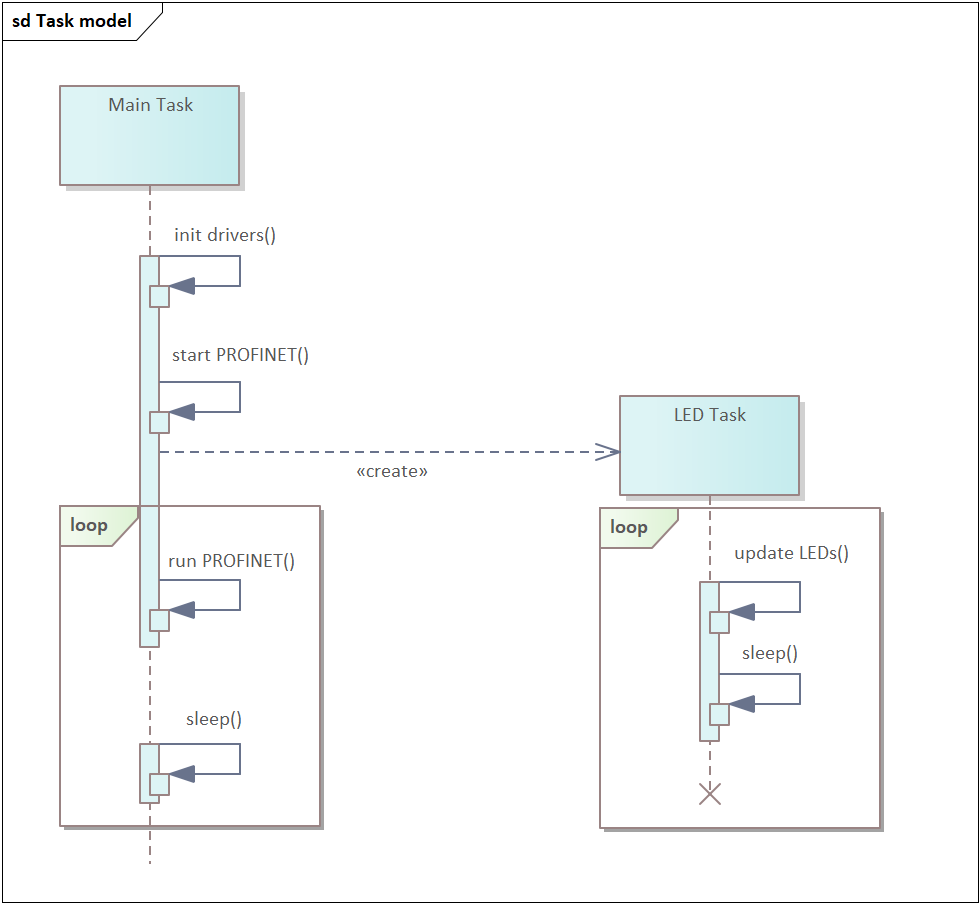

|
PROFINET Device
v2.00.01
|


|
|
PROFINET Device
v2.00.01
|
|
The PROFINET example application provides an example of a PROFINET field device (hereinafter called IO-Device) based on the PROFINET IO Stack (hereinafter called PNIO Stack) as part of the TI MCU SDK package.
The main goal of the application is to provide the user a basic understanding of how the PNIO Stack can be configured and handled. The example is a good starting point to develop your own IO-device.
This example application implements all mandatory features, which are required by the PROFINET Specification for a CC-B IO-device.
The main features are described below.
There are some LEDs on the evaluation board which are controlled by the LED task in this example programme and used in the following way:
| SysConfig | Color | AM64x_AM243x EVM | AM243x LP | Description |
|---|---|---|---|---|
| CONFIG_SYS_FAILURE_LED | red | LD23 (TEST_LED1) | LD2 (TEST_LED2_RED) | Indicates system failure. For example in case of no cyclic communication with PROFINET IO Controller. |
| CONFIG_DCP_SIGNAL_LED | green | LD26 (TEST_LED2) | LD1 (TEST_LED1_GREEN) | Indicates receive of "DCP signal". |
| CONFIG_CYCLIC_LEDS | green | LD11…LD14 LD16...LD19 | LD12…LD15 | Represent the first byte of the output process data received cyclically from the controller. If there are only 4 LEDs it's the low nibble of the first byte. |
The system failure LED (CONFIG_SYS_FAILURE_LED) is used to indicate the communication status. This LED is flashing in case of no PROFINET communication and continuously OFF in case the communication has been established successfully.
The DCP Signal is used to identify a single PROFINET device (IO-device or IO-controller) by blinking a LED. If a DCP Signal was sent to the IO-device on the PROFINET network, the PNIO stack indicates the start of DCP Signal to the application. The Application starts blinking the DCP Signal (LED CONFIG_DCP_SIGNAL_LED) with 1 Hz frequency. After 3 seconds, the stack indicates a stop of the DCP Signal to the application and the Applications stops blinking the DCP Signal LED.
All I/O submodules are mapped to the input and output process data images respectively. From the IO-device point of view:
The cyclic data exchange starts after the communication with a PROFINET Controller (hereinafter called IO-Controller) is established .
Output data
The Process data LEDs (CONFIG_CYCLIC_LEDS) reflect the value of the first output byte. Every LED of the process data LED group is associated with a bit of the first output byte. If the value of a particular bit is set to “1” corresponding LED will be switched ON. In case of bit value “0”, appropriate LED will be switched OFF.
Input data
The first output byte received from the controller is copied to the first input byte.
Additionally the application increments the second input byte.
Both actions are performed within the main task periodically.
In addition to the cyclic data exchange of process input/output data PROFINET uses acyclic data communication to exchange parameter data or network management data between IO-Controller and IO-Devices. The following acyclic data communication is implemented in the example application:
All relevant IO-device data is stored permanently in the external OSPI flash memory.
The external EEPROM is used for storing MAC address for the Ethernet Interface of the IO-device.
The application has a separate instance running, which stores the default values of the permanent data. In case of a factory reset the currently stored permanent data will be overwritten with those default values.
The example application supports an original Factory Reset and a Reset to Factory Mode 2 (Reset Communication parameter).
The PNIO stack structure is based on the instance model from the PROFINET.
Figure 1 - based on the PROFINET instance model from IEC CDV 61158-5-10 - Annex A.
Stack application programming interface (API) functions are grouped in a way to reflect the stack components. The application shall use the API functions to start-up the stack as well as for the run-time interaction.
PDEV component handles data and incorporates services which are relevant for the whole physical device. Use PN_API_PDEV group to configure chassis id or to start the IO-device for instance.
DEV component handles data and incorporates services which are relevant for a logical device. According to instance model it is possible to have multiple logical devices as well as controllers on one physical device. Current implementation foresees one logical device. Use PN_API_DEV group to plug and pull submodules for instance.
IM component handles the data and incorporates services which are relevant specifically for I&M data. Though logically I&M is a part of the logical device, these APIs were put in a separate PN_API_IM group to make DEV group less bulky.
ETH component handles data and incorporates services which are relevant for Ethernet interfaces of an IO- device. According to instance model one physical device can have multiple Ethernet interfaces. Current implementation foresees one Ethernet interface. Use PN_API_ETH group to configure port data or MAC address for instance.
SNMP component takes care of data and services which are relevant for the SNMP agent of an IO-device. To configure SNMP use PN_API_SNMP group.
In some cases the stack needs to communicate with the application during run-time. It can be an indication of some event, such as factory reset. It can be a data exchange as well, as in the case of storing permanent data to the flash. For these purposes a callback mechanism is used. It is expected, that the application registers relevant callback functions to the stack. Some callback functions are mandatory, some are optional.
Callbacks are synchronous: after calling a callback function the stack is blocked, waiting for the application to finish the execution. Therefore it is an important requirement for the callback functions to be as fast as possible.
Basically two methods are used to register a callback function to the stack. It depends on the API group, which method to use for the callback registration.
The stack provides one specific API function to register a specific callback function. An example of PN_API_DEV_registerWriteRecordIndicatedCallback() registration is depicted in the figure below.
Figure 2 - Single callback example.
The other way to register callback functions is using the callback vector. Pointers to callback functions are grouped together in a vector and passed to the stack using one API function. For instance all callbacks from ETH API must be registered as vector: instance of the PN_API_ETH_SCallbacks.
Figure 3 - Callback vector example.
The example application consists of two tasks:
The main task configures hardware, initializes and configures the PNIO stack and creates the LED task. Apart from this, it is responsible for periodical triggering of the stack* and the process data image update;
*- such implementation has historical reasons. It is planned to make this triggering transparent for the application.
The LED task is responsible for PROFINET-relevant board LEDs.

Figure 4 - Task model of the demo application.
The application has two main phases: Startup and Run-Time.
During the startup sequence the application initializes and configures the board and system hardware, starts the operating system and creates tasks.
Regarding the PNIO stack: the application is responsible for initialization and configuration of the stack. From PROFINET point of view this is a point of creation, configuration and start of a PN-device.
After the application has started the IO-device, it is entering the Run-time phase. From now on the IO-device is visible for other PROFINET participants and can start the communication. In the run-time phase the application is responsible for handling the process data as well as responses to occasional callback requests from the stack. The LEDs status update and permanent data operations are being handled here as well.

Figure 5 - Application control flow.
In the text below we will focus on the PROFINET-relevant operations executed by the application.
During the startup sequence the application initializes, configures and starts the IO-device.
In the main task the application initializes stack and stack-relevant hardware. The APP_initProfinetStack() function is used for this purpose.
Initialize PRU ICSS instance, defined in SysConfig, and load pre-compiled PROFINET-specific firmware to the PRU. In this step the application provides MAC address of the PROFINET interface to the PRU as well.
Initialize permanent storage and read permanent storage data to RAM. Permanent data will be needed in the configuration step.
Initialize stack using PN_API_PDEV_init(). This function must be called prior executing any other stack API function.
The application must be properly configured in the PNIO-stack to guarantee a successful operation. The APP_configureProfinetStack() function takes care of the configuration step, in the example application. Assume all functions, described below, are mandatory for configuration of an IO-device if not mentioned otherwise.
Figure 6 - Configuration control flow diagram.
Main focus of the PDev configuration is to specify chassis id, vendor id and device id of the physical device. There are no relevant callbacks to register here.
APP_configPdev() fills an instance of PN_API_PDEV_SConfiguration structure with valid values and passes it to the stack using PN_API_PDEV_applyConfiguration().
Note: It is not allowed to re-configure PDev after the PROFINET communication has been started.
In some cases the IO-device is addressed via an Ethernet interface. For instance, the discovery and basic configuration protocol (DCP) assigns the StationName or IP address to an Ethernet interface. Therefore this component shall be explicitly configured by the application.
The example application executes APP_configEth() to configure such parameters as e.g.:
Station name, IP address;
Interface MAC address. It must be consistent with MAC address specified for the PRU during initialization;
Port data (Port 1 and Port 2);
Additionally it is important to configure callbacks, which require actions from the application side:
Manipulate permanent data. For example: save interface-relevant permanent data or factory reset;
Indicate “DCP Signal” LED;
Provide system time. Is needed by the stack to generate UUIDs;
The application fills an instance of the PN_API_ETH_SConfiguration structure with valid values and passes it to the stack using PN_API_ETH_applyConfiguration().
Similar as for the Ethernet interface, the application must configure the SNMP agent of an IO-device. The APP_configSnmp() function is responsible for this.
As mentioned before, I&M data is a part of the logical device. I&M APIs have been separated to unload the DEV APIs. Therefore the I&M and device configuration will be described in this section together.
Figure 7 - Logical device configuration.
The configuration of the logical IO-device happens in APP_configDev().
The configuration order, depicted in the figure above, is important!
Submodules must be mapped to I/O data buffers.
Therefore the data buffers must be set prior plugging submodules.
On the other hand I&M data can be assigned only to plugged submodules.
I/O data buffers
The PROFINET protocol uses a cyclic process data model to exchange process data between an IO-controller and an IO-device. The application is responsible for updating the input process data, which is periodically sent to the controller. As well as updating the outputs, regarding to output process data, which is periodically received from the controller.
The application must provide memory buffers to the PNIO stack. Those buffers will be used to exchange process data between the application and the stack. This is done by PN_API_DEV_setOutputDataBuffer() and PN_API_DEV_setInputDataBuffer() functions respectively.
Note: For historical reasons, both of these APIs require three buffers for triple buffer implementation. Currently the triple buffer is implemented on the PRU level as described in the documentation MCU+SDK: Profinet Device FWHAL. Currently same data buffer has to be provided three times per API as done in the example documentation.
Submodules
The modules and submodules configuration of the IO-device is done in APP_configureSubmodules(). The example application implements a compact PROFINET device. Real Identification is specified during start-up and cannot be re-configured in run-time.
Figure 8 - Submodules configuration.
Register substitutes
The application registers module and submodule substitutes use PN_API_DEV_registerModuleSubstitutes() and PN_API_DEV_registerSubmoduleSubstitutes() respectively . This is an optional feature. If substitutes are registered, the stack can autonomously identify the substitute modules and submodules during connection establishment with IO-controller.
Plug modules and submodules
The example application connects a DAP module with four submodules, and 18 I/O modules with one submodule per module. It is mandatory to have at least one submodule in a module.
Note: While plugging the stack maps submodules to process data image using “offset” specification. Therefore it is important to configure the I/O data buffers before plugging submodules.
I&M data
According to the PROFINET specification every device must have at least one I&M device representative carrier, which supports I&M0-I&M4 data. The application nominates a submodule of the DAP module as I&M device representative. In APP_configureImData() an instance of PN_API_IM_SCarrier is created and passed to the stack.
Note: The application is responsible for data consistency between chassis Id of the PDev PN_API_PDEV_applyConfiguration() and I&M0 data of the I&M device representative.
Note: It is possible to assign I&M carrier to a plugged submodule. Therefore relevant submodules must be plugged prior to I&M configuration.
Write Record indication
Application registers Write Record indication callback function using PN_API_DEV_registerWriteRecordIndicatedCallback(). It is done to have a possibility to store writable I&M data permanently. Application callback APP_cbWriteRecordInd() analyzes Record Data index, to identify the type of I&M data to be stored.
Apply configuration
PN_API_DEV_applyEquipmentConfiguration() function is called at the end of configuration sequence to let stack execute a basic configuration check. It is recommended to execute this API function after each manipulation on logical device configuration.
After finishing configuration application starts the IO-device using two functions:
PN_API_PDEV_start() starts the PNIO stack;
APP_pruStart() starts PRU hardware. This function shall be executed after starting the stack;
Now the IO-device is running and is visible in the PROFINET network.
After application has started the IO-device, PROFINET communication is handled by the stack and runs transparently. From PROFINET point of view application is responsible for updating the process data images and providing such callbacks as for permanent data manipulation or LED signalization.
Application executes APP_runProfinetStack() in the main task loop.
Here it gets output data received from the controller using PN_API_DEV_getBufferOutputData(). Application updates input process data image as well. This is being done by getting input buffer from stack PN_API_DEV_getBufferInputData(), manipulating buffer data and subsequent buffer release PN_API_DEV_releaseBufferInputData().
Additionally stack must be regularly triggered using PN_API_PDEV_run().
LED task is a service task, which is responsible for LEDs control:
APP_updateSysFailureLedFromPNState() checks the run state of the PROFINET device using PN_API_DEV_getRunState(). If device is running, i.e. there is a communication established, the LED is permanently OFF. Otherwise it is flashing red.
APP_updateDcpSignalLed() controls DCP Signal LED, depending on dcpSignalLedBlinkingState_s flag. This flag is being updated by the stack, which uses APP_UI_cbDcpSignal() callback for this purpose. For more information refer to Cyclic data communication (Process Data Inputs/Outputs) section of this document.
APP_updateCyclicLedsFromPD() reflects the status of the first byte of the output process data image, as described in DCP Signal indication section of this document.
 1.8.17
1.8.17